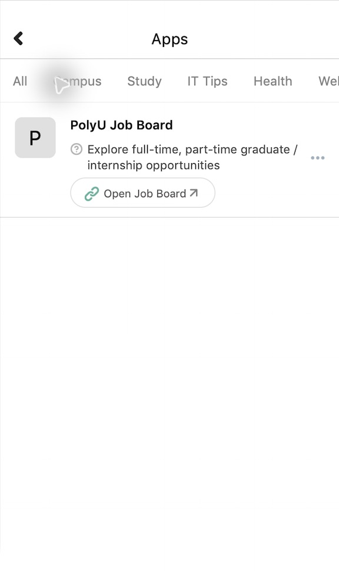

Observed interface
After the category bar was dragged, Job remained selected and its content stayed visible, but the selected Job label was outside the viewport.

Source: apps-171722-category-bar-dragged.png · 2026-09-2801 / INTERACTIVE PROTOTYPE
Search campus services, understand the current filter, and move to an official external service without losing your place.
APPS · INTERACTIVE MOBILE PREVIEW
Click inside the prototype. No credentials or external submissions are collected.
02 / EVIDENCE & RATIONALE
After the category bar was dragged, Job remained selected and its content stayed visible, but the selected Job label was outside the viewport.

Source: apps-171722-category-bar-dragged.png · 2026-09-28A persistent result summary names the active category. Wrapped category chips remain visible, while search offers a direct recognition-based route to a service.
03 / FIGMA & EVALUATION
A00–A07 use 390 × 844 frames. The handoff specifies every trigger, destination, overlay, and preserved state.
The official PolyU domain and NetID requirement are announced before the simulated web view. No login data enters this prototype.
The task asks participants to find the guest visitor service without revealing the path. Agent checks are not participant results.